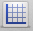

Graphs can be added to your worksheet and customized using equations and points. In addition, the look of your graphs can be configured by choosing the scale and labels of the coordinate grid.
Graphs

Graph with equation
-
Create GraphTo create a new graph use one of the following methods:
- In GraphPouch, press Control-G (^G).
- In GraphPouch select .
- Press the New Graph button

-
Customize GraphThere are a variety of settings you can use to customize the look of your graph. Visit the following sections to learn more about each feature.
-
Remove GraphTo remove a graph follow these steps:
- Select the graph you would like to delete by clicking on the graph using the left mouse button. The selected graph will have a blue rectangle designating its selected state.
Optionally you can select multiple graphs by clicking on several graphs while holding the Shift or ⌘ key. - Press the Delete key.
- Select the graph you would like to delete by clicking on the graph using the left mouse button. The selected graph will have a blue rectangle designating its selected state.
-
Relevant Topics